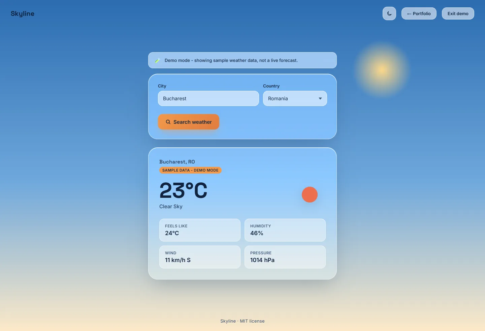
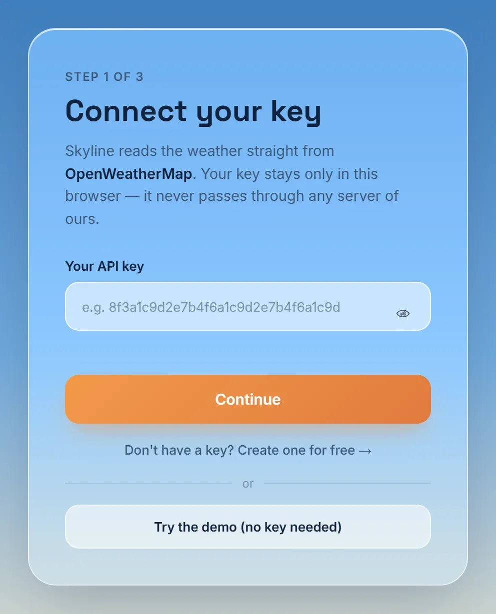
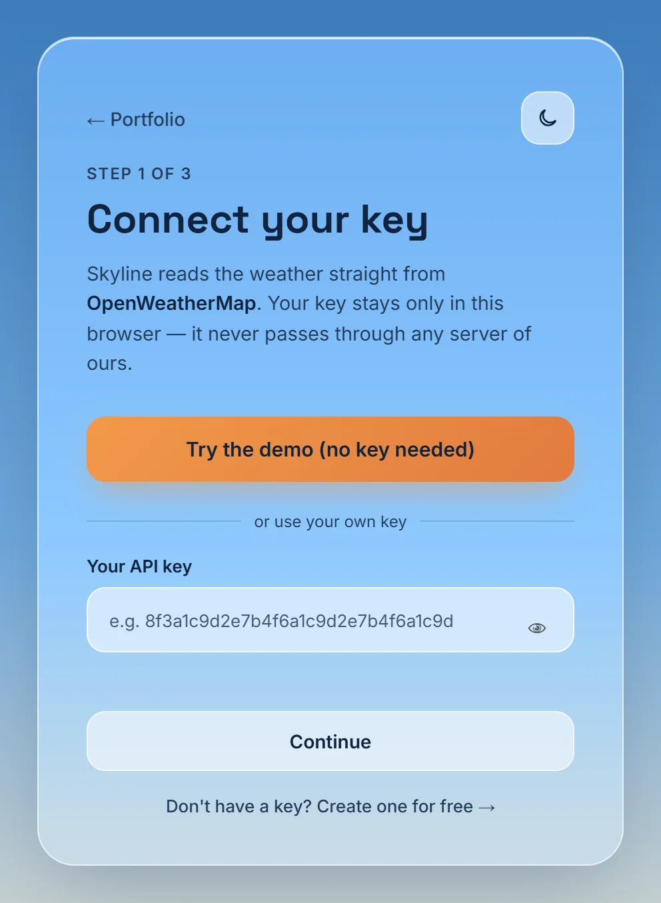

Skyline Weather
Type in a city and get live weather - temperature, feels-like, humidity, wind, pressure - straight from OpenWeatherMap. Instead of the app holding one shared API key for every visitor, each person pastes in their own free key, which never leaves their own browser - no account, no backend server in between. Developers call that pattern BYOK (Bring Your Own Key).

What it does
A BYOK login screen over an animated CSS sky, a search form (city + optional country), and a weather card with current conditions, feels-like, humidity, wind, and pressure - with error handling split explicitly by failure case (network, invalid key, city not found, other). A separate demo mode (no key required) shows the same app with clearly-labelled sample data, for anyone who'd rather not create an OpenWeatherMap key just to look around.
My role
Product idea, UX, and the BYOK security model; built in pair-programming with an AI assistant (Claude).
Quality
Error states handled per failure case rather than one generic message; entrance animation respects prefers-reduced-motion; double-click can't fire duplicate requests.
Status
Live · MIT · source on GitHub.
Why this exists
A weather app is a well-worn exercise, so the interesting part here is the access model: instead of embedding a shared API key - which either leaks or hits rate limits fast - each visitor enters their own free OpenWeatherMap key, stored only in their own browser. There's no server in between and no key ever shared across users, a trade-off stated plainly in the app rather than glossed over.
Design case study: a sky you can read
Skyline's first screen asks a visitor for their own API key before they've seen anything. The look is a sky: frosted-glass cards over an animated CSS sky with a sun and drifting clouds, and a sunset orange used sparingly for the one main action. The catch with glass is that the CSS alone doesn't tell you the contrast: what shows through the card changes it.
Design iteration (November 2026)
Two problems: a visitor without a key met a form first, and several texts were too faint on the glass. I measured contrast on the real pixels of the screen, not from the CSS values, then fixed it at the cause:
- The demo comes first, as the orange main button, with "or use your own key" and the key form below it.
- Secondary and tertiary text got darker: from 2-3.5:1 to about 4.8:1 or more.
- The orange buttons got dark text instead of white, which measured about 2.3:1.
- The "Sample data" tag became an orange pill with dark text; orange text on the glass was about 1.2:1.
- Error text became a darker red: from about 3.4:1 to 5.1-6.3:1.


What I haven't done yet
- No usability testing with other people.
- The sky is animated, so contrast was measured on screenshots, not on every moment of the animation.
Highlights
- A debugging habit worth keeping. A weather icon that looked like a broken image turned out to be OpenWeatherMap's genuine minimalist "clear sky" icon - caught by checking the actual network request in DevTools instead of assuming a bug.
- A dedicated Open Graph image, built in the same visual language as the app, with full OG and Twitter Card meta tags so the link looks intentional when shared.
- Errors split explicitly by case. A network failure, an invalid key (401), a city not found (404), and anything else each get their own message and, where relevant, their own recovery action - instead of one generic failure state.
- The storage trade-off is named, not hidden. Each visitor's key is remembered right in their own browser so they don't have to re-enter it or create an account - but that also means anyone with DevTools access to that specific device could read the key back out. That plain-text browser storage is called localStorage, and the trade-off is stated as an accepted limitation for a personal project, with the real fix (a small backend proxy) named for what a production app would need.
How it was built
Plain files - markup, styles, and script - with no bundler and no
dependencies to install. Keeping the styles and script out of the
page lets a strict Content-Security-Policy block any code injected
into it, and the logic with no page behind it has
16 unit tests
that run on every push. A glassmorphism login card sits over a pure-CSS animated sky; a
<select> of ISO country codes was chosen deliberately
over free text, to avoid inconsistent input breaking the API request.